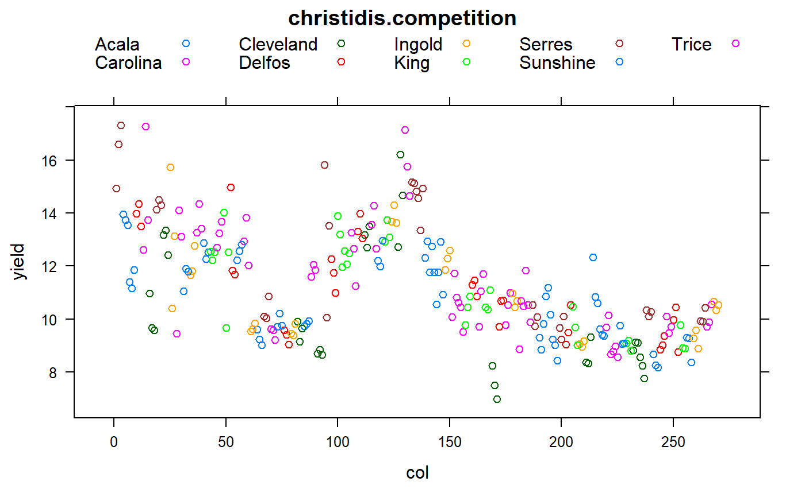
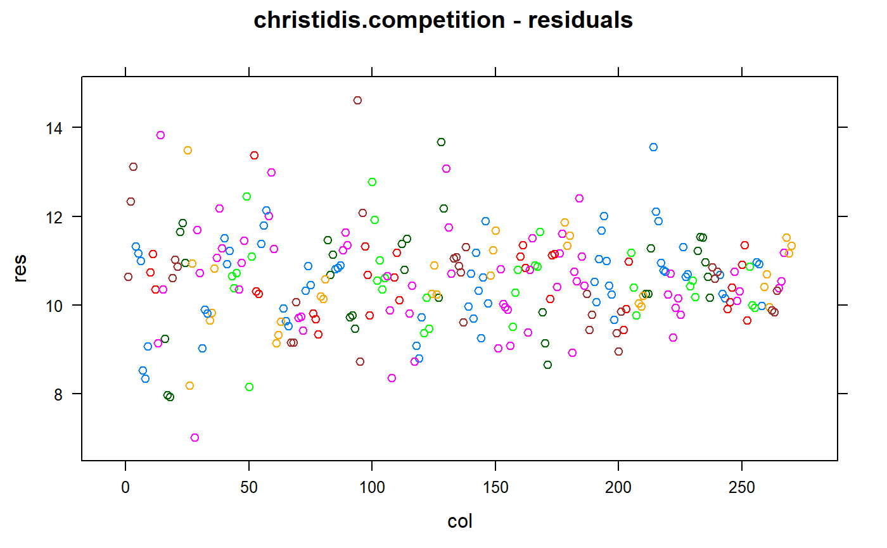

christidis.competition.RdCompetition between varieties in cotton, measurements taken for each row.
data("christidis.competition")
A data frame with 270 observations on the following 8 variables.
plotplot
plotrowrow within plot
blockblock
rowrow, only 1 row
colcolumn
gengenotype
yieldyield, kg
heightheight, cm
Nine genotypes/varieties of cotton were used in a variety test. The plots were 100 meters long and 2.40 meters wide, each plot having 3 rows 0.80 meters apart.
The layout was an RCB of 5 blocks, each block having 2 replicates of every variety (with the original intention of trying 2 seed treatments). Each row was harvested/weighed separately. After the leaves of the plants had dried up and fallen, the mean height of each row was measured.
Christidis found significant competition between varieties, but not due to height differences. Crude analysis.
TODO: Find a better analysis of this data which incorporates field trends AND competition effects, maybe including a random effect for border rows of all genotype pairs (as neighbors)?
Christidis, Basil G (1935). Intervarietal competition in yield trials with cotton. The Journal of Agricultural Science, 25, 231-237. Table 1. https://doi.org/10.1017/S0021859600009710
None
# \dontrun{ library(agridat) data(christidis.competition) dat <- christidis.competition # Match Christidis Table 2 means # aggregate(yield ~ gen, aggregate(yield ~ gen+plot, dat, sum), mean) # Each RCB block has 2 replicates of each genotype # with(dat, table(block,gen)) libs(lattice) # Tall plants yield more # xyplot(yield ~ height|gen, data=dat) # Huge yield variation across field. Also heterogeneous variance. xyplot(yield ~ col, dat, group=gen, auto.key=list(columns=5), main="christidis.competition")libs(mgcv) if(is.element("package:gam", search())) detach("package:gam") # Simple non-competition model to remove main effects m1 <- gam(yield ~ gen + s(col), data=dat) p1 <- as.data.frame(predict(m1, type="terms")) names(p1) <- c('geneff','coleff') dat2 <- cbind(dat, p1) dat2 <- transform(dat2, res=yield-geneff-coleff) libs(lattice) xyplot(res ~ col, data=dat2, group=gen, main="christidis.competition - residuals")# }